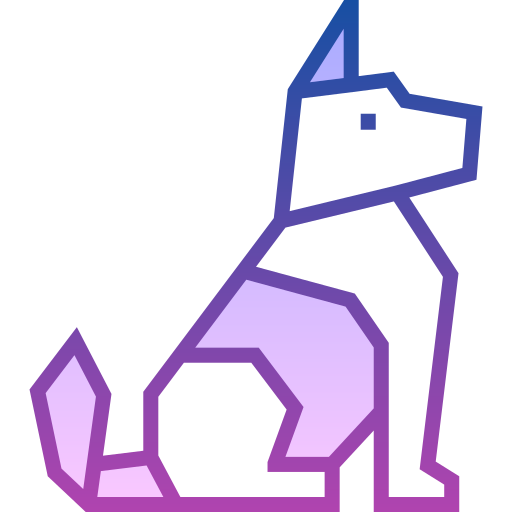
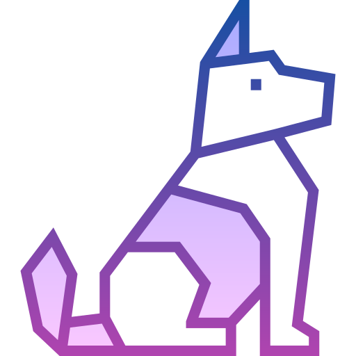

La empresa es reconocida como una de las distribuidoras mas omprtantes de productos del pais
 |
 |  |
| Gato | Perro | Tiburon |
La empresa es reconocida como una de las distribuidoras mas omprtantes de productos del pais
|
 | |
| Gato | Perro | Tiburon |